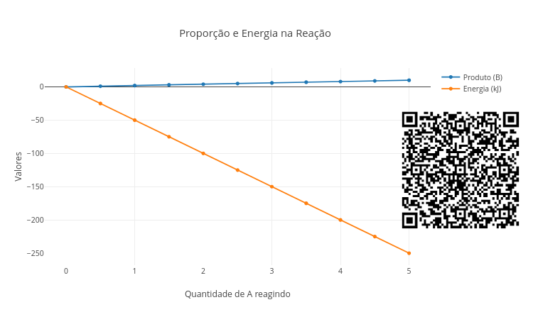
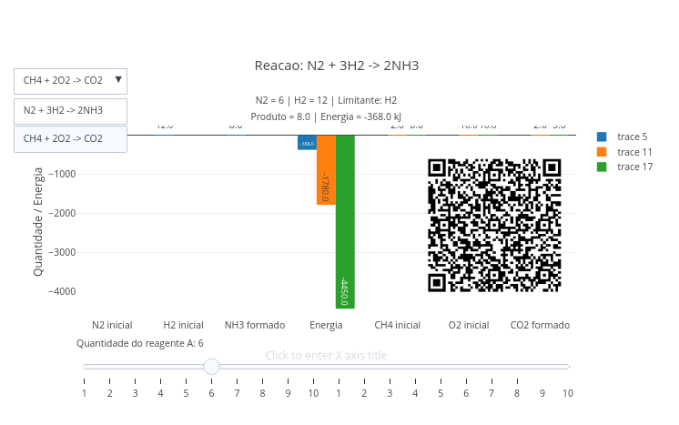
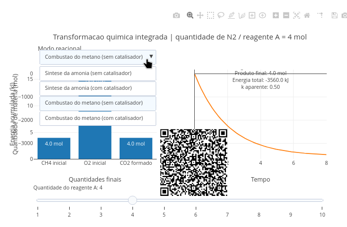

3 Termoquímica e Estequiometria
Quando um combustível queima, libera calor. Quando colocamos gelo em uma bebida, o ambiente esfria. Quando um comprimido efervescente reage, percebemos transformação e energia ao mesmo tempo.
Quanto de matéria reage … e quanta energia está escondida nessa transformação ?
Neste capítulo, vamos explorar dois ramos fundamentais da Química: a Estequiometria, que permite quantificar reagentes e produtos, e a Termoquímica, que revela a energia envolvida nas transformações. Nos livros didáticos, esses temas costumam aparecer separados. Mas o mundo não separa quantidade de energia. Na prática, toda reação química envolve simultaneamente a quantidade de matéria transformada e a energia trocada com o ambiente. Ou seja, cada reação envolve o quanto reage e quanta energia está envolvida no processo
Depois de explorar, você consegue:
- interpretar proporções em reações químicas;
- calcular quantidades de reagentes e produtos;
- compreender reações exotérmicas e endotérmicas;
- relacionar quantidade de matéria com energia liberada ou absorvida;
- explorar os temas do capítulo com auxílio de visualizações interativas
Antes de qualquer fórmula, experimente o objeto interativo de JSPlotly que segue.

Esse script mostra, de forma simples, como uma reação química pode ser analisada por dois lados ao mesmo tempo: a estequiometria (quanto produto se forma) e a termoquímica (quanta energia é liberada ou absorvida). Do mesmo modo, você pode variar a quantidade de reagente e observar quanto de produto é formado e quanta energia é liberada.
Agite antes de usar
No início do código, altere o trecho abaixo para outros valores, e vá clicando no botão add entre esses para observar o resultado.
const A_inicial = 5;Experimente valores como 2, 8, e 10. E observe que, quando se aumenta a quantidade de (A), mais produto (B) é formado e mais energia total participa da reação. A reação usada no script é:
\[ A \rightarrow 2B \tag{3.1}\]
Isso significa que:
\[ 1 \text{ mol de } A \rightarrow 2 \text{ mols de } B \tag{3.2}\]
Portanto, a quantidade de produto formado depende da proporção entre os coeficientes da reação:
\[ B = \frac{coef_B}{coef_A} \cdot A \tag{3.3}\]
Agora altere o trecho abaixo, experimentando valores de -20, -100, e 50.
const deltaH = -50 ; kJ/molEssa energia é denominada entalpia, com o delta representando sua variação global na reação. Nos livros essa quantidade é normalmente representada por \(\Delta\)H. Perceba que, embora pareça estranho, valores negativos de “deltaH” dão uma inclinação positiva para a reta de energia, enquanto que valores positivos resultam em inclinação negativa. Ou seja, “-deltaH” indica que a energia aumenta com (A) enquanto que “+deltaH” indica que essa energia reduz.
De fato, quando:
\(\Delta\)H > 0; a reação absorve energia (endotérmica); \(\Delta\)H < 0; a reação libera energia (exotérmica).
No script essa energia total é calculada por:
\[ E = n \cdot \Delta H \tag{3.4}\]
Onde: n é a quantidade de reagente (mol) e \(\Delta\)H a variação de entalpia da reação (em kJ/mol). Assim, é possível traçar alguns cenários interessantes com o app:
- Mais reagente. Aumente
A_iniciale observe que a quantidade de produto aumenta proporcionalmente. - Reação mais exotérmica. Use um valor mais negativo para
deltaH. Isso representa uma reação que libera energia. - Reação endotérmica. Troque a entalpia para um valor positivo. Isso representa uma reação que absorve energia.
- Mudança na proporção. Troque o
coefBpara 4. Observe que mais produto é formado para a mesma quantidade de reagente.
O script mostra que uma equação química balanceada permite prever quanto reagente é consumido, quanto produto é formado, e quanta energia é liberada ou absorvida no processo.
Agora organizemos as ideias.
3.1 Estequiometria: quantificando a transformação
A estequiometria estuda as relações quantitativas entre reagentes e produtos. A partir de uma equação balanceada, podemos determinar quanto de reagente é necessário, quanto de produto será formado, e qual reagente limita a reação. Ou seja, a reação ocorre em proporções fixas.
3.2 Termoquímica: entendendo a energia
A termoquímica estuda o calor envolvido nas reações químicas. Se exotérmica (ou exergônica, de “energia”), o calor é liberado; se endotérmica (ou endergônica), a reação absorve energia. A grandeza central envolvida é a variação de entalpia (\(\Delta\)H).
Desse modo, toda reação possui, simultaneamente, uma proporção de matéria e uma variação de energia associada. Dobrar a quantidade de reagente resultará no dobro da energia envolvida. Reduzir a reação à metade resultará na redução da energia total. Considerando a quantidade de material envolvida na reação como n:
\[ \Delta H_{\text{total}} = n \cdot \Delta H_{\text{reação}} \tag{3.5}\]
Onde:
\(\Delta\)H_total é a energia total liberada ou absorvida pela quantidade que reagiu; n é a quantidade de matéria que efetivamente reagiu, em mol; *\(\Delta\)_reação* é a variação de entalpia por mol de reação, definida no script como:
\[ \Delta H_{\text{reação}} = -50 \ \text{kJ/mol} \tag{3.6}\]
A relação de proporcionalidade entre matéria e energia envolvidas numa reação química é conhecida por Lei de Hess. Por essa regra a energia é conservada na reação:
\[ \Delta H_{\text{reação}} = \sum \Delta H_{\text{produtos}} - \sum \Delta H_{\text{reagentes}} \]
Onde o símbolo $\Sigma$ representa a somatória de elementos envolvidos. Usando a relação de entalpias de formação:
\[ \Delta H_{\text{reação}} = \sum n_p \Delta H_f^\circ(\text{produtos})- \sum n_r \Delta H_f^\circ(\text{reagentes}) \]
Onde n_p e n_r são os coeficientes estequiométricos dos produtos e reagentes (mols de cada que reagem).
Volte às situações iniciais. Observe que combustível queimando sugere energia liberada, que gelo derretendo indica energia absorvida, e que comprimido efervescente reagindo sugere matéria e energia juntos. Agora conseguimos interpretar melhor que a quantidade determina quanto reage, e que a energia determina como o sistema troca calor. Mas se é assim, então:
O que explica melhor cada situação: quantidade ou energia?
Traduzindo em perguntinhas menores:
- é possível liberar muita energia com pouca matéria ?
- é possível ter muita matéria reagindo com pouca energia ?
- como identificar o
reagente limitanteem uma situação real (aquele que, se faltar, não tem reação) ?
Para responder esses a questionamentos, experimente o próximo app de JSPlotly.

Agite antes de usar
Nesse segundo objeto interativo, você passa a trabalhar com um sistema químico mais completo e realista, onde é possível escolher diferentes reações químicas e variar a quantidade do reagente principal. E também pode observar tanto o produto formado e a energia envolvida, quanto o reagente limitante. Para isso:
- Utilize o menu suspenso para escolher a reação química.
- Use a barra deslizante (slider) para variar a quantidade do reagente principal.
Observe como o sistema responde a cada alteração para a quantidade de produto formado, a energia total liberada ou absorvida, qual reagente está limitando a reação, e se variações num reagente continuam tendo efeito no sistema.
O script simula a reação de formação da amônia:
\[ N_2 + 3H_2 \rightarrow 2NH_3 \tag{3.7}\]
Ele permite variar a quantidade inicial de N\(_2\), mantendo H\(_2\) fixo. Com isso, você pode observar qual reagente limita a reação, quanto NH\(_3\) é formado, quanta energia é liberada, e como matéria e energia se transformam juntas.
A equação química balanceada informa a proporção da reação:
\[ 1 \text{ mol de } N_2 + 3 \text{ mols de } H_2 \rightarrow 2 \text{ mols de } NH_3 \tag{3.8}\]
Isso significa que, para cada 1 mol de N\(_2\), são necessários 3 mols de H\(_2\). Então, se um dos reagentes acaba antes, ele se torna o reagente limitante. Para experimentar essa situação, use o slider Quantidade de N2 (mol). Ao aumentar N\(_2\), observe:
- quando N\(_2\) é o limitante;
- quando H\(_2\) passa a limitar a reação;
- quanto NH\(_3\) é formado;
- como a energia total muda.
Observe que a quantidade de H\(_2\) é fixa no código (const H2_fixo):
\[ n_{H_2} = 12 \text{ mol} \tag{3.9}\]
Como a reação exige 3 mols de H\(_2\) para cada 1 mol de N\(_2\), o H\(_2\) permite no máximo o valor abaixo de “mols de reação”:
\[ \frac{12}{3} = 4 \tag{3.10}\]
Isso significa que, quando há mais de 4 mols de N\(_2\), o H\(_2\) passa a ser o limitante.
O script calcula o avanço possível da reação (\(\xi\)) a partir de cada reagente:
\[ \xi_{N_2} = \frac{n_{N_2}}{1} \tag{3.11}\]
\[ \xi_{H_2} = \frac{n_{H_2}}{3} \tag{3.12}\]
O avanço real é o menor deles:
\[ \xi = \min(\xi_{N_2}, \xi_{H_2}) \tag{3.13}\]
Depois, o script calcula o produto formado:
\[ n_{NH_3} = 2\xi \tag{3.14}\]
E a energia total:
\[ E = \xi \cdot \Delta H \tag{3.15}\]
Nesse modelo, a energia da reação é dada por:
\[ \Delta H = -92 \ \text{kJ} \tag{3.16}\]
Como o valor é negativo, a reação é exotérmica, ou seja, libera energia. Quanto maior o avanço da reação, maior a energia liberada.
Dessa forma, é possível alguns cenários interessantes com o aplicativo da Figura 3.3:
- Pouco \(N_2\). Use valores pequenos, como 1, 2 ou 3 mol, e observe que N\(_2\) limita a reação.
- Mistura estequiométrica. Use 4 mol de N\(_2\). Nesse caso:
\[ 4N_2 + 12H_2 \]
Estão exatamente na proporção da reação.
- Excesso de N\(_2\). Use valores maiores que 4 mol de N\(_2\), e observe que H\(_2\) passa a limitar a reação. Mesmo aumentando N\(_2\), o NH\(_3\) formado não aumenta mais.
Tente também responder as perguntas que seguem.
- aumentar o reagente principal sempre aumenta o produto ?
- o que acontece quando outro reagente passa a limitar o sistema ?
- duas reações diferentes mas com quantidades semelhantes liberam a mesma energia ?
- por que algumas reações são muito mais energéticas que outras ?
- por que adicionar mais reagente não altera o resultado final quando se passa do ponto de saturação desse ?
- por que a energia deixa de aumentar quando esgota-se o reagente limitante ?
E como um todo, veja que não basta ter muito reagente. É preciso ter os reagentes na proporção correta, já que a reação só avança até onde o reagente limitante permite.
Algumas considerações sobre o app da Figura 3.3 valem a pena uma abstração da “caixa pensante”, sobre:
E se aumentarmos N\(_2\) mas mantivermos H\(_2\) fixo?
E se passarmos do ponto estequiométrico ?
E se o reagente em excesso não for consumido ?
E se a energia liberada parar de aumentar mesmo com mais N\(_2\) ?
E se quisermos produzir mais NH\(_3\)… devemos aumentar N\(_2\) , H\(_2\), ou ambos ?
Agora…que tal integrar tudo isso acima com um conceito visto na Seção 2.3, o tempo da reação ?! Para isso, experimente mais um JSPlotly.

Nesse simulador, você pode explorar uma transformação química para amônia ou metano envolvendo três arestas simultâneas: quanto reage, quanta energia está envolvida, e quão rápido o sistema evolui na presença de um catalisador.
Agite antes de usar
Escolha um modo reacional e utilize o slider para variar a quantidade do reagente principal. Observe as quantidades finais (painel esquerdo), a energia acumulada ao longo do tempo (painel direito), o reagente limitante, a energia total e a rapidez da transformação.
O código traz os coeficientes da reação para se trabalhar: coefA: 1, coefB: 3, e coefP: 2. Esses coeficientes representam a equação química balanceada:
\[ A + 3B \rightarrow 2P \]{#ea-A3B}
No exemplo da amônia:
\[ N_2 + 3H_2 \rightarrow 2NH_3 \tag{3.17}\]
Eles determinam a proporção entre reagentes e a quantidade de produto formado. A quantidade disponível de reagente B é dada por B__fixo, identificando-o como reagente limitante. A relação fica então:
\[ \xi = \min\left(\frac{n_A}{coefA}, \frac{n_B}{coefB}\right) \tag{3.18}\]
Esse é o “coração” do modelo. Ele determina quanto a reação pode avançar, e conecta estequiometria com termoquímica.
A constante cinética k controla a velocidade da reação:
k: 0.85,Assim, a evolução temporal da reação é modelada por:
\[ f(t) = 1 - e^{-kt} \tag{3.19}\]
Isso significa que quando k é pequeno a reação é lenta, e quando k é grande a reação fica rápida. Nesse sentido, o catalisador aumenta o valor de k.
No código, essa evolução da reação no tempo é dada por:
fracao = 1 - Math.exp(-k * tempo);Em síntese, cada parâmetro do código representa uma ideia física:
- coeficientes \(\rightarrow\) proporção
- quantidade \(\rightarrow\) limite da reação
- deltaH \(\rightarrow\) energia
- k \(\rightarrow\) tempo da transformação
Se quiser explorar alguns cenários para esse último app, seguem algumas sugestões.
- Crescimento controlado pelo reagente limitante. Enquanto um reagente limita o sistema, aumentar sua quantidade aumenta produto e energia.
- O excesso deixa de importar. Quando outro reagente passa a limitar, adicionar mais do primeiro não altera o resultado final.
- Catalisador. O catalisador acelera o processo, mas não altera o resultado final (quantidade).
- Comparação entre reações. Duas reações com quantidades semelhantes podem liberar energias muito diferentes.
- Intensidade energética. Pequenas quantidades de material podem gerar grandes quantidades de energia, dependendo da reação.
O tema descrito ao longo do capítulo encontra aplicação prática em contextos bem diversos, como no uso de combustíveis e o funcionamento de motores, no metabolismo energético das células vivas, em diversos processos industriais, e nas “calorias” liberadas pelos alimentos ou consumidas pelo corpo em atividade física. Em todos eles, matéria e energia estão intimamente conectadas.
Entre os 3 scripts desse capítulo, o que permite trabalhar com proporção de matéria e energia da Figura 3.2 possui uma estrutura que pode ser aplicada a diversos sistemas químicos. Olhando mais panoramicamente para o script, pode-se sugerir que seu pseudocódigo envolve algumas etapas simples, como:
1. definir a equação química;
2. informar quantidades iniciais;
3. identificar o reagente limitante;
4. calcular o produto formado;
5. calcular a energia total;
6. acompanhar a evolução no tempo.No código do JSPlotly a proporção química aparece aqui:
const B_formado = (coefB / coefA) * A_inicial;A energia total aparece aqui:
const energia = A_inicial * deltaH;E o gráfico é gerado variando a quantidade de (A) que reage:
for (let i = 0; i <= A_inicial; i += 0.5)